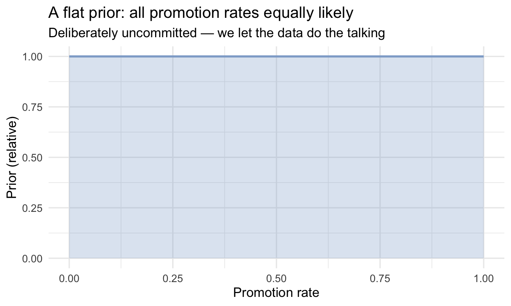
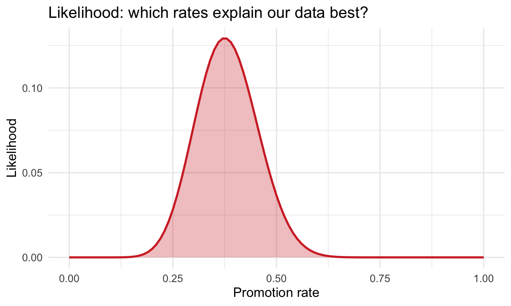
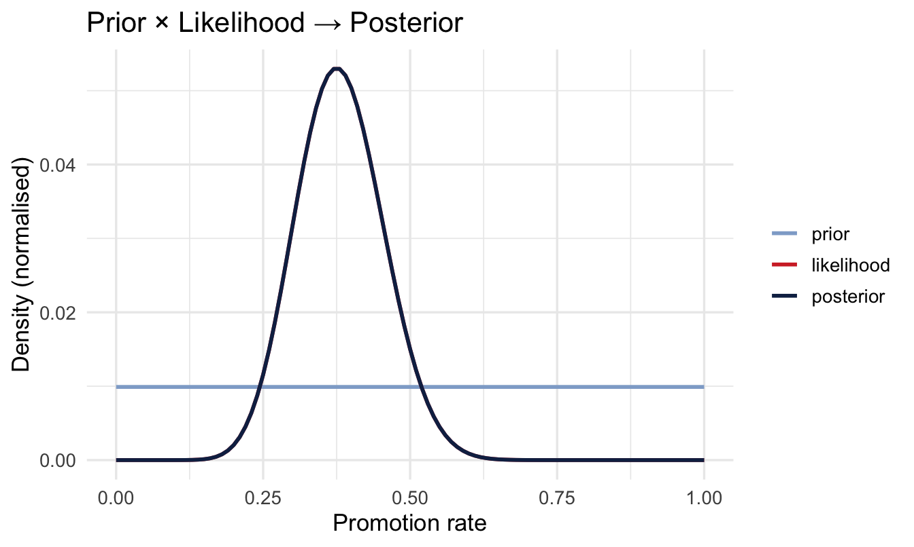
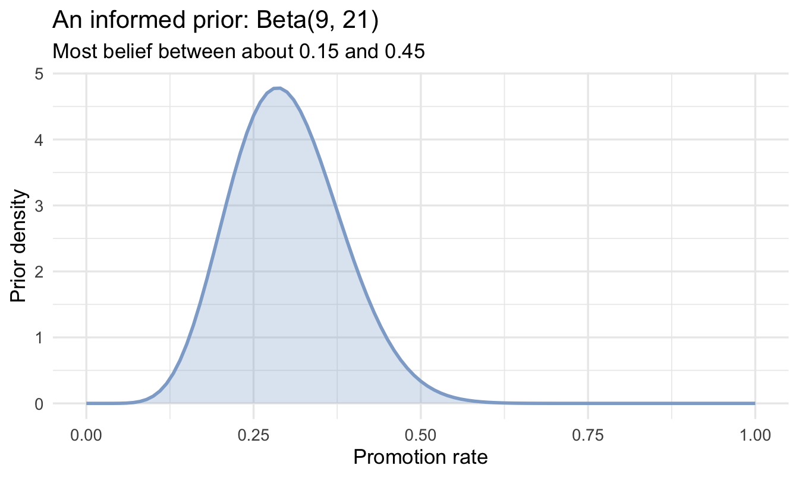
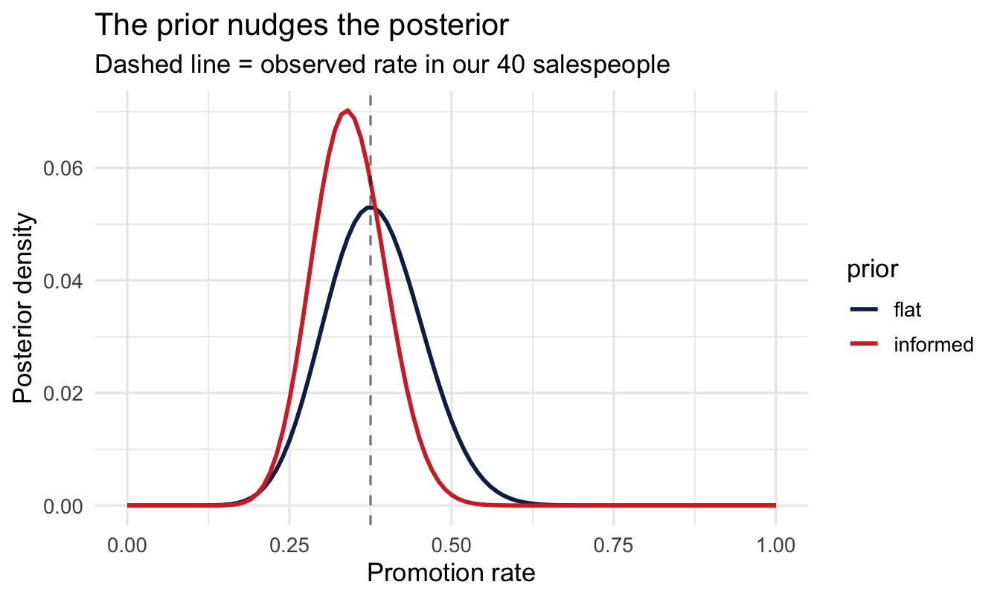
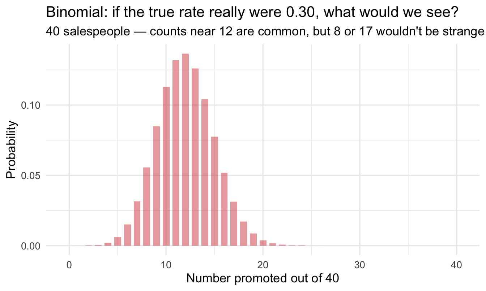
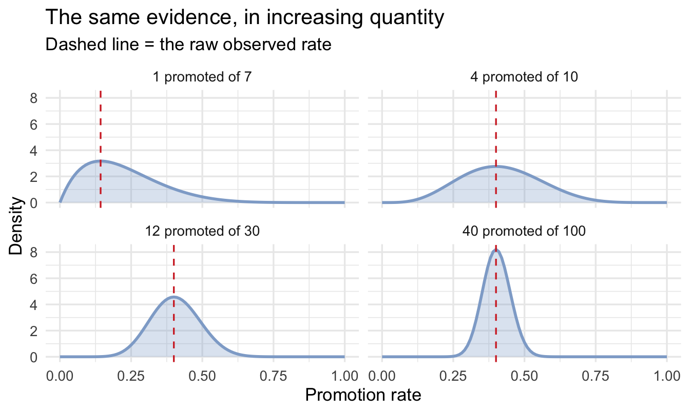
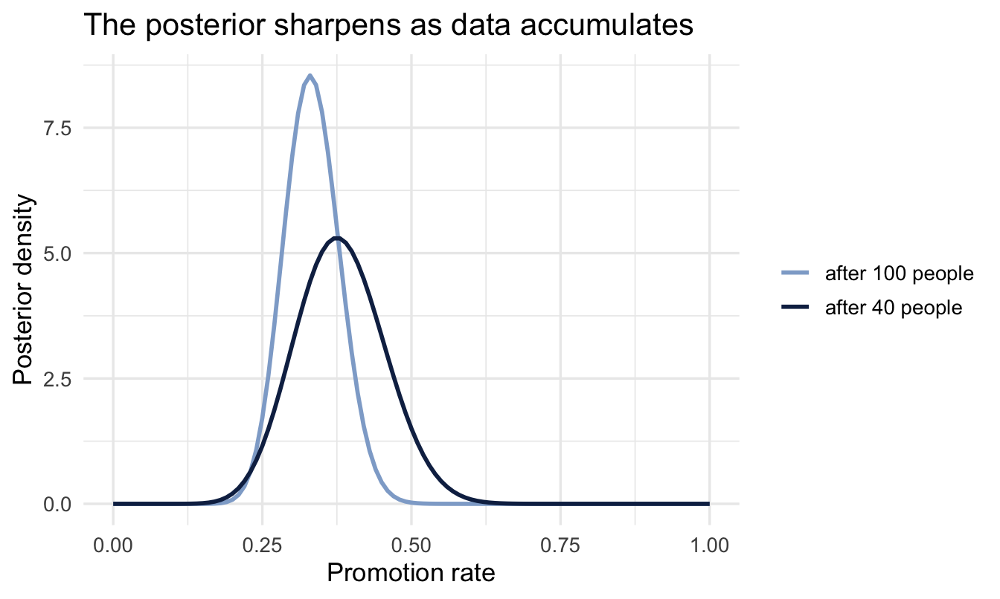

library(tidyverse)
library(peopleanalyticsdata)
theme_set(theme_minimal(base_size = 13))
set.seed(2026)
data("salespeople", package = "peopleanalyticsdata")
# Chapter 1 found a single missing value in each of `sales`,
# `customer_rate` and `performance`; dropping those rows here keeps
# the rest of this chapter's code simple.
salespeople <- salespeople |> drop_na(sales, customer_rate, performance, promoted)4 Bayesian Thinking: Bayes’ Theorem & Your First Inference
Welcome to the Bayesian part!
You now have everything you need: you can describe data (Chapter 1), think in probabilities (Chapter 2), and you understand distributions and sampling wobble (Chapter 3). Today those pieces click together.
Note
Nothing new and difficult arrives today — we just point what you already know in a new direction.
What you’ll be able to do by the end
- Turn a stakeholder’s vague hunch into a question data can answer
- State Bayes’ theorem: prior × likelihood → posterior
- Compute a posterior using grid approximation — and know why you won’t use it for long
- See how the prior changes the answer — and where a defensible prior comes from
- Read a Beta and a Binomial, and use the Beta-Binomial shortcut
- Update sequentially and answer a decision question
4.1 Setup
4.2 The idea
4.2.1 It starts with a hunch, not a question
Someone says something in a meeting. In my experience that is almost always how these types of things begin.
“I don’t think we’re promoting enough of our salespeople. That’s why people leave — they can’t see a path.”
It’s your VP of Sales, and she may well be right. She has run that team for eleven years. But as it stands you can’t do anything with what she’s said. It isn’t a question, it’s a feeling — an informed one, formed over a long time, but not yet something data can answer.
4.2.2 Turning it into something answerable
What happens next matters more than anything statistical you’ll do afterwards, and it isn’t statistics at all. You have to negotiate that hunch down into a question that has an answer.
“Are we promoting enough?” is really at least three separate questions hidden inside one:
- What is our promotion rate? A number nobody currently knows.
- Is it lower than it should be? Needs a comparison — last year, another function, an industry benchmark.
- Is it why people leave? A different analysis altogether, and a much harder one (Chapter 17).
You can’t do all three at once, and the second and third both depend on the first. So you start there. Even then it isn’t precise enough: promoted over what period, and out of whom? A short conversation settles it:
Of the salespeople we hire, what proportion are promoted at least once within three years of joining?
That’s answerable. It has exactly one unknown number attached to it, which is the shape of problem this chapter solves.
NoteThis is the only chapter that does this the long way
Every other chapter in the book opens with a short “Analysis strategy” section that states the question, the quantity that would answer it, what could go wrong and what the plan is — four paragraphs, before any code.
This chapter doesn’t have one, because getting from a hunch to the question above is the chapter’s subject and compressing it into a box would be teaching it by assertion. What the last three sections did slowly is what that section does quickly. Once you can do it in your head, four paragraphs is enough.
NoteWhy the three years is not a detail
Take the window out and the question has no answer. “What proportion get promoted?” is either 100% — wait long enough and nearly everyone who stays does — or undefined, because the people who haven’t been promoted yet are not the same as the people who never will be, and a 0 in your data cannot tell you which kind you are looking at. Someone who joined last month and someone who joined nine years ago both show a 0, and they mean completely different things.
A binary outcome that unfolds over time needs a stated horizon before it means anything. Two ways to give it one:
- Fix the window, which is what we’ve done: everyone in the sample has been with the company at least three years, and the flag means “promoted within their first three”. Now a 0 is a real 0.
- Model the timing itself, which is Chapter 17’s survival analysis. That handles people you haven’t watched long enough by treating them as censored rather than as failures.
We take the first route here, and it costs an assumption we should state plainly: the 40 salespeople are treated as having been observed over the same complete three-year window. The teaching data doesn’t carry joining dates, so we assume this rather than verify it. On your own data you can and should verify it, with one line — check the spread of tenure in the rows you’re about to count. If it’s wide, you are mixing “hasn’t happened” with “hasn’t happened yet”, and Chapter 17 is the chapter you want.
4.2.3 What data do you actually have?
Rarely all of it. Promotions have been recorded properly since the HRIS migration, which means you have reliable flags for 40 salespeople. The rest are in the old system, in a field three different people used three different ways. Those different ways, which nobody can really pinpoint, suggest that you should almost certainly start with the newer data.
Forty is not many. Your first instinct is to count the promotions, divide by 40, and report a percentage — and that will certainly produce a number. But Chapter 3 already warned you what happens to a number built from 40 people: it wobbles. Draw a different 40 and you’d get a different percentage. A single figure on a slide hides that entirely.
It also throws away something valuable. Your VP has watched this process for over a decade. She has a view about the promotion rate, and it is not worthless just because it isn’t a spreadsheet.
4.2.4 Updating a belief
So you have two sources of information, and neither is good enough alone. Experience without data is an anecdote. Forty rows without context is noise.
Important
You don’t throw away your colleague’s opinion, and you don’t ignore the numbers. You combine them into a new, better-informed belief.
That combination is all Bayes’ theorem does. The rest is arithmetic.
4.2.5 The three ingredients
\underbrace{P(\theta \mid \text{data})}_{\text{posterior}} \;\propto\; \underbrace{P(\text{data} \mid \theta)}_{\text{likelihood}} \;\times\; \underbrace{P(\theta)}_{\text{prior}}
- Prior P(\theta) — what you believed before seeing this data
- Likelihood P(\text{data} \mid \theta) — how well each possible answer explains the data you saw
- Posterior P(\theta \mid \text{data}) — your updated belief
Our unknown \theta is the true promotion rate — the rate the process would produce in the long run, not the count in any particular group of 40 people.
NoteA different lens: you are not trying to find the true value
If you were trained the classical way, this is the moment to adjust your grip. There, θ is a fixed unknown constant and the job is to estimate it — to get as close as possible and quantify how far off you might be. The answer is a number, with an error bar attached to express regret about not knowing more.
Bayesian practice keeps the same θ and changes the job. You will never know θ exactly, and pinning it down isn’t the goal. The goal is to hold an honest, well-calibrated description of what θ could be, and to sharpen that description every single time new evidence arrives.
So the posterior isn’t a stepping stone towards a real answer. It is the answer — and it’s an answer built to be revised. This quarter’s posterior becomes next quarter’s prior, as you’ll see at the end of this chapter. Learning doesn’t finish; it just gets less uncertain.
4.3 Our question
4.3.1 What is the true promotion rate?
The 40 salespeople with clean promotion records are all we have to learn from.
- 1
- Any chunk that draws a random sample needs a seed, or the numbers in the text change every time the book is rebuilt. Set it immediately before the sampling, not just once at the top of the chapter, so the result survives you re-running chunks out of order.
- 2
- A stand-in for the 40 clean records. The full dataset has 350 salespeople once Chapter 1’s missing values are dropped; we’re deliberately handicapping ourselves to the situation you’ll usually be in.
- 3
-
promotedis coded 0/1, so summing it counts the promotions.
Salespeople: 40 Promoted: 15 Observed rate: 0.375 Our observed rate is 0.375 — but with only 40 salespeople we know (Chapter 3!) that this estimate wobbles.
Note
Rather than a single estimate, Bayes gives us a whole distribution of plausible true rates, with more weight on the ones that explain the data best. That distribution is the posterior.
4.4 Grid approximation
4.4.1 What it is
The promotion rate could be any number between 0 and 1. That’s infinitely many possibilities, and combining a prior and a likelihood across all of them is, in general, a calculus problem.
Grid approximation dodges the calculus by refusing to consider infinitely many values. Instead we line up a manageable number of candidates — 0.00, 0.01, 0.02, all the way to 1.00 — and score each one in turn. A hundred and one candidates is a poor substitute for a continuum in principle, and a perfectly good one in practice.
4.4.2 The strategy
- List many candidate values for the true rate
- Score each by its prior — how plausible was it before?
- Score each by its likelihood — how well does it explain the data?
- Multiply, then normalise so the scores sum to 1
That’s it — no calculus required.
p_grid <- seq(from = 0, to = 1, length.out = 101)4.4.3 Why we’re doing it this way
Because you can watch it happen. Every step above is arithmetic you could do in a spreadsheet, and by the end of this chapter you’ll have seen a posterior assembled from its parts with nothing hidden. That’s worth a great deal — when brms produces a posterior in the next chapter, you’ll know what it’s producing, rather than trusting it.
ImportantAnd why you’ll almost never use it again
Grid approximation is a teaching tool that runs out of road fast, and it’s worth knowing exactly where.
Here we have one unknown, so 101 candidates means 101 calculations. Add a second unknown and you need a grid across both: 101 × 101 = 10,201. A third takes you past a million. A modest model with five parameters — which is nothing, that’s an intercept and four predictors — needs 101⁵, about ten billion evaluations, and it will still be a coarse grid.
This is the curse of dimensionality, and it is the reason Bayesian statistics stayed impractical for two centuries. The fix is to stop scoring every point and instead go wandering through the space, spending time in proportion to how plausible each region is — which is what Chapter 5’s sampler does, and what Chapter 11 opens up if you want to see inside it.
4.4.4 Step 1 — the prior, and look at it
We’ll start with a flat prior: every rate equally plausible.
That is not what we believe. We opened this chapter by saying the VP’s eleven years of experience was worth keeping, and a flat prior throws all of it away. We start here anyway, for one chapter only, because it makes the machinery visible: with a flat prior the posterior is driven entirely by the data, so anything that moves in the plots below moved because of the 40 salespeople and nothing else. It’s a controlled baseline, not a recommendation.
Her real prior arrives a few sections from now, once you’ve seen what the flat one does — and then you’ll be able to see exactly how much difference she makes.
prior_flat <- rep(1, length(p_grid))
tibble(p = p_grid, prior = prior_flat) |>
ggplot(aes(p, prior)) +
geom_area(fill = "#8fabd0", alpha = 0.30) +
geom_line(colour = "#8fabd0", linewidth = 1) +
labs(title = "A flat prior: all promotion rates equally likely",
subtitle = "Deliberately uncommitted — we let the data do the talking",
x = "Promotion rate", y = "Prior (relative)")
Important
Always visualise your prior. It’s the assumption you’re most often asked to defend.
4.4.5 Step 2 — the likelihood
For each candidate rate, how probable is our data (15 promotions in 40 salespeople)? That’s the Binomial from last chapter:
1likelihood <- dbinom(k_promoted, size = n_people, prob = p_grid)
tibble(p = p_grid, likelihood = likelihood) |>
ggplot(aes(p, likelihood)) +
geom_area(fill = "#d32f2f", alpha = 0.30) +
geom_line(colour = "#d32f2f", linewidth = 1) +
labs(title = "Likelihood: which rates explain our data best?",
x = "Promotion rate", y = "Likelihood")- 1
-
Read this as a question asked 101 times over: if the true rate were
prob, how probable is it that we’d have seen exactlyk_promotedpromotions amongn_people? The data stays fixed and the candidate rate varies — which is the opposite of how you normally usedbinom(), and the single most common place people trip up.

4.4.6 Step 3 — multiply and normalise
Bayes’ theorem is applied to each candidate rate on its own: the prior score for 0.30 multiplies the likelihood score for 0.30, and nothing else. likelihood * prior_flat does all 101 of those in one line — * in R pairs the two vectors up position by position and multiplies each pair, returning a vector the same length again. (This is element-wise multiplication, not matrix multiplication — %*% is the operator for that, and it isn’t what we want here.) Dividing by the total then rescales the 101 scores so they sum to 1, which is what makes them a distribution rather than a set of relative weights.
Tip
Worth knowing before it causes a problem: if the two vectors are not the same length, R still hands you an answer — it recycles the shorter one from the start and pairs it up again. If the longer length is an exact multiple of the shorter it does this silently; otherwise you get a warning, but a result all the same. Both of ours are 101 long, so the pairing is the obvious one, but a length mismatch elsewhere can give you a wrong answer rather than an error.
posterior <- likelihood * prior_flat
posterior <- posterior / sum(posterior)
tibble(p = p_grid,
prior = prior_flat / sum(prior_flat),
likelihood = likelihood / sum(likelihood),
posterior = posterior) |>
pivot_longer(-p, names_to = "curve", values_to = "density") |>
mutate(curve = factor(curve, c("prior", "likelihood", "posterior"))) |>
ggplot(aes(p, density, colour = curve)) +
geom_line(linewidth = 1) +
scale_colour_manual(values = c("#8fabd0", "#d32f2f", "#122a52")) +
labs(title = "Prior × Likelihood → Posterior",
x = "Promotion rate", y = "Density (normalised)", colour = NULL)
4.4.7 Summarising the posterior
post_mean <- sum(p_grid * posterior)
cum <- cumsum(posterior)
ci_low <- p_grid[which.min(abs(cum - 0.025))]
ci_high <- p_grid[which.min(abs(cum - 0.975))]
cat("Posterior mean:", round(post_mean, 3), "\n")Posterior mean: 0.381 cat("95% credible interval: [", round(ci_low, 3), ",", round(ci_high, 3), "]\n")95% credible interval: [ 0.24 , 0.53 ]4.4.8 Say it out loud
“There is a 95% probability that the true promotion rate lies between 0.24 and 0.53.”
NoteA different lens: this sentence isn’t available to a frequentist interval
A classical 95% confidence interval is built the other way round: it’s a procedure that, if you repeated the whole study many times, would produce an interval containing the true rate 95% of the time — it is not, strictly, a 95% probability statement about this one interval. A Bayesian credible interval is a direct probability statement about the parameter, given the data you actually have. Both are legitimate — they answer different questions — but the plain-English reading most people reach for instinctively (“there’s a 95% chance the true value is in here”) is only correct for the credible interval, which is one reason Bayesian results are often easier to present to a non-technical stakeholder without a caveat.
4.5 Priors
4.5.1 Where does a prior come from?
Four places, roughly in ascending order of effort:
- Physical and logical limits — a rate can’t be below 0 or above 1. Free, and more useful than it sounds.
- Your own data — previous cohorts, last year’s figures, the same measure in a neighbouring function.
- Domain knowledge — “promotion rates in sales organisations tend to run 20–40% over a few years”.
- Published research on the process itself — the section below.
And if you want to go further, Chapter 23 covers a formal process for eliciting a prior directly from an expert’s judgement, rather than inferring one from a simple rule.
4.5.2 You already have a prior — the question is whether you’ll admit it
An analyst who has worked in a domain for any length of time always has some expectation of what they’re about to see. You know roughly what attrition looks like in your organisation. You’d be startled by a 90% promotion rate and unsurprised by 25%.
That expectation exists whether or not you write it down. A Bayesian prior isn’t the introduction of bias into a neutral process — it’s the act of stating the expectation you were carrying anyway, in a form that can be inspected, challenged and overruled by data.
But there’s a higher standard than “what I’d expect”. You should have a view about the process you’re analysing, not just about the numbers it tends to produce. Why would a promotion rate be what it is? What determines it — span of control, growth rate, tenure distribution, how the ladder is designed? An analyst who can answer that has a prior worth having. An analyst who can’t is guessing with extra steps.
4.5.3 Theory as a starting point — and why desk research earns its keep
This is where evidence-based management has something concrete to offer. The discipline argues that good decisions draw on several sources of evidence at once: the scientific literature, your organisation’s own data, practitioner expertise, and the concerns of the people affected. In practice the first of those is the one analysts skip. There’s a strong pull to open the data immediately and find out what’s happening, and reading around the problem first feels like a detour.
It isn’t. Someone has almost certainly studied promotion rates, internal mobility, or whatever your process is — across many more organisations than you have access to. That literature is a genuine source of information about your problem, and Bayesian analysis gives you somewhere to put it. Desk research stops being background reading and becomes an input to the model.
It has a second use, further down the line. Chapter 21 asks you to draw what you believe causes what before deciding which variables belong in a model. The same literature that gives you a prior is usually the best available evidence for that drawing — someone else has already tested whether the arrow you are about to draw exists.
ImportantTheory in, scepticism intact
The point is emphatically not to adopt published findings and assume they hold in your organisation. Research on other firms in other sectors may or may not generalise to yours — often it doesn’t.
What you’re doing is:
- Take what the theory suggests, and encode it as a prior — a starting position, held with a strength that reflects how much you trust it.
- Confront it with your own data.
- Report where you ended up, and how far the data moved you.
That’s a disciplined way to use the best available thinking while staying sceptical of it. If your data disagrees with the literature, a weakly-held prior will get overruled and you’ll see it happen. If the two agree, you’ve earned a sharper answer than either could give alone. Either way the assumption was on the table from the start.
Compare that with the alternative on offer: a method that claims to use no prior information at all, run by an analyst who has plenty and no legitimate place to declare it.
In fairness, classical practice does let prior-like information in — it just doesn’t call it a prior. Ridge regression is a Gaussian prior on the coefficients; the LASSO is a Laplace one; empirical Bayes (Chapter 14) estimates the prior from the data itself. That strengthens the point rather than weakening it. Everyone has a prior. The question is only whether it is written down somewhere you can argue with it.
Note
A prior is an assumption you state openly and can defend — which is more honest than the hidden assumptions in any other method.
4.5.4 An experienced VP of Sales’ prior
Our VP believes the rate is usually around 0.3, and she’s confident enough to argue for it but not so confident she’d bet the department. We encode that as Beta(9, 21) — a shape we’ll unpack properly in a moment:
Note how that happened: we listened to her, and chose two numbers. It works, and you should be slightly uncomfortable with it — a different analyst in the same conversation could easily have landed on Beta(6, 14). Chapter 23 replaces this with a structured elicitation process that asks her answerable questions and derives the shape from her answers, so the prior belongs to her rather than to your interpretation of her.
tibble(p = p_grid, informed = dbeta(p_grid, shape1 = 9, shape2 = 21)) |>
ggplot(aes(p, informed)) +
geom_area(fill = "#8fabd0", alpha = 0.30) +
geom_line(colour = "#8fabd0", linewidth = 1) +
labs(title = "An informed prior: Beta(9, 21)",
subtitle = "Most belief between about 0.15 and 0.45",
x = "Promotion rate", y = "Prior density")
4.5.5 What it does to the answer
post_informed <- likelihood * dbeta(p_grid, shape1 = 9, shape2 = 21)
post_informed <- post_informed / sum(post_informed)
tibble(p = p_grid, flat = posterior, informed = post_informed) |>
pivot_longer(-p, names_to = "which", values_to = "density") |>
ggplot(aes(p, density, colour = which)) +
geom_line(linewidth = 1) +
geom_vline(xintercept = k_promoted / n_people, linetype = "dashed", alpha = 0.5) +
scale_colour_manual(values = c("#122a52", "#d32f2f")) +
labs(title = "The prior nudges the posterior",
subtitle = "Dashed line = observed rate in our 40 salespeople",
x = "Promotion rate", y = "Posterior density", colour = "prior")
ImportantThe teaching point
With only 40 salespeople, the prior still has a visible say. Get to a few hundred and the likelihood dominates — the prior’s influence fades away without you having to do anything about it.
Priors matter most exactly when data is scarce, which is often the case in People Analytics — a new office, a new role, a pilot programme.
Your turn
Try a sceptical prior centred on 0.5, dbeta(p_grid, shape1 = 20, shape2 = 20). Compute and plot its posterior alongside the others. Where does it land?
# Your code here4.6 The Beta-Binomial shortcut
4.6.1 Two distributions, two different jobs
We’ve now used both of these, so it’s worth being precise about what each one is for. They’re easy to confuse because both involve proportions — but they describe different things.
The Binomial is a distribution over counts. Fix a rate and a number of people, and it tells you how many promotions to expect:
tibble(promotions = 0:40,
probability = dbinom(0:40, size = 40, prob = 0.3)) |>
ggplot(aes(promotions, probability)) +
geom_col(fill = "#d32f2f", alpha = 0.45, width = 0.7) +
labs(title = "Binomial: if the true rate really were 0.30, what would we see?",
subtitle = "40 salespeople — counts near 12 are common, but 8 or 17 wouldn't be strange",
x = "Number promoted out of 40", y = "Probability")
Notice it’s made of bars, not a curve. You can promote 11 people or 12, never 11.5. This is the distribution that generates data, which is why it plays the role of the likelihood.
The Beta is a distribution over rates. It lives strictly between 0 and 1 and describes how plausible each possible rate is — belief about a parameter, not a count of people. That makes it the natural shape for a prior or a posterior about a proportion.
4.6.2 Reading a Beta
Beta(a, b) has two parameters and the useful way to read them is as imaginary observations: roughly, a − 1 successes and b − 1 failures.
The awkward − 1 is bookkeeping, and it comes from where the counting starts. The no-evidence Beta is Beta(1, 1), not Beta(0, 0) — the 1s are already there before you’ve seen anything. Since each real observation adds 1 to a or to b (that’s the update rule two sections below), reading the counts back out means subtracting the 1 you began with.
If you want the reason underneath: the Beta density is proportional to p^{a-1}(1-p)^{b-1}, and a Binomial likelihood for k successes in n trials is proportional to p^{k}(1-p)^{n-k}. Line those two up and the exponents are the counts — so a − 1 = k and b − 1 = n − k. The − 1 isn’t a convention someone picked; it’s the offset between a parameter and the exponent it sits in.
So:
Beta(1, 1)— nothing observed at all. Perfectly flat, which is the flat prior we started the chapter with.Beta(9, 21)— as if you’d watched 8 promotions among 28 salespeople. Centred near 0.3, and about as confident as 28 people’s worth of evidence would justify. That’s our VP.
Start from flat and add real data, and you can watch belief take shape:
beta_examples <- tribble(
~label, ~k, ~n,
"1 promoted of 7", 1, 7,
"4 promoted of 10", 4, 10,
"12 promoted of 30", 12, 30,
"40 promoted of 100", 40, 100
) |>
mutate(label = fct_inorder(label)) |>
expand_grid(p = p_grid) |>
1 mutate(density = dbeta(p, shape1 = 1 + k, shape2 = 1 + n - k))
ggplot(beta_examples, aes(p, density)) +
geom_area(fill = "#8fabd0", alpha = 0.30) +
geom_line(colour = "#8fabd0", linewidth = 1) +
2 geom_vline(aes(xintercept = k / n),
linetype = "dashed", colour = "#d32f2f") +
facet_wrap(~ label) +
labs(title = "The same evidence, in increasing quantity",
subtitle = "Dashed line = the raw observed rate",
x = "Promotion rate", y = "Density")- 1
-
Each panel starts from a flat
Beta(1, 1)and adds that panel’s data —ksuccesses andn - kfailures. This is the update rule stated below; the panel is just showing it four times. - 2
- The raw rate, for comparison with where the distribution actually puts its weight.

ImportantWhat the panel is telling you
Three of those four panels describe the same observed rate — 4 in 10, 12 in 30 and 40 in 100 are all 0.4 — and they are emphatically not the same conclusion.
Where the distribution sits is set by the ratio. How narrow it is comes from the count. Ten observations leave you barely able to rule anything out between 0.2 and 0.7; a hundred pins you to roughly 0.3–0.5. A percentage on a slide can’t distinguish those two situations. This can.
One detail worth noticing: at small counts the distribution’s centre of mass sits slightly inside the dashed line, pulled towards 0.5. The peak itself stays right on the raw rate — it is the lopsidedness of the curve that shifts the average, with more of the weight lying on the 0.5 side. That’s the flat prior still exerting a little influence, and it fades as the data grows — the same effect you saw with the VP’s prior a few sections ago.
4.6.3 The shortcut itself
Here’s the payoff. When the prior is a Beta and the data is Binomial, the posterior is always another Beta, and you can write it down without any grid, any sampling, or any calculus:
Prior Beta(a, b) + data (k promotions out of n) → Posterior Beta(a + k, b + n − k)
Add your successes to the first parameter and your failures to the second. That’s the whole update. Distribution pairs that behave this neatly are called conjugate, and while there are only a handful of them, this one covers a great deal of People Analytics.
a_prior <- 1 # flat prior = Beta(1, 1)
b_prior <- 1
a_post <- a_prior + k_promoted
b_post <- b_prior + (n_people - k_promoted)
cat("Posterior: Beta(", a_post, ",", b_post, ")\n")Posterior: Beta( 16 , 26 )cat("Posterior mean:", round(a_post / (a_post + b_post), 3), "\n")Posterior mean: 0.381 cat("95% credible interval: [",
round(qbeta(0.025, shape1 = a_post, shape2 = b_post), 3), ",",
round(qbeta(0.975, shape1 = a_post, shape2 = b_post), 3), "]\n")95% credible interval: [ 0.242 , 0.531 ]Compare these to the grid results above — they match.
4.7 Sequential updating
4.7.1 Today’s posterior is tomorrow’s prior
Suppose 60 more salespeople join, and 18 are eventually promoted.
n_new <- 60
k_new <- 18
a_post2 <- a_post + k_new
b_post2 <- b_post + (n_new - k_new)
tibble(p = p_grid,
`after 40 people` = dbeta(p_grid, shape1 = a_post, shape2 = b_post),
`after 100 people` = dbeta(p_grid, shape1 = a_post2, shape2 = b_post2)) |>
pivot_longer(-p, names_to = "stage", values_to = "density") |>
ggplot(aes(p, density, colour = stage)) +
geom_line(linewidth = 1) +
scale_colour_manual(values = c("#8fabd0", "#122a52")) +
labs(title = "The posterior sharpens as data accumulates",
x = "Promotion rate", y = "Posterior density", colour = NULL)
ImportantLearning never restarts — provided the process doesn’t either
You never have to go back to the raw data. Last quarter’s conclusion becomes this quarter’s starting point — and analysing data in batches gives exactly the same answer as analysing it all at once.
That equivalence rests on an assumption worth saying out loud: that there is one true rate θ, and it isn’t moving. Here we’ll take that as given. In a real organisation it often isn’t — a reorganisation, a new promotion policy or a change of leadership can genuinely shift the rate, and then evidence from three years ago is describing a process that no longer exists. Piling it in as though it were current makes you confidently wrong, and the more history you have the more confidently.
There are ways to handle it — dropping history that predates a known change, or letting older observations count for less as they age. Both are ways of asking how much should the past still count? instead of assuming the answer is “fully”, and Chapter 14 comes back to them once you’ve seen where a prior’s strength comes from. For now, assume θ is stable — and keep an eye on whether that’s still true.
TipFor the ML/DS crowd
This is the same principle behind online / incremental learning — updating a model as new data streams in without retraining from scratch. Bayesian sequential updating is one of the cleanest mathematical justifications for why that works: the posterior already captures everything the model learned so far, so it’s a legitimate starting point for the next batch.
4.8 Making a decision
Managers ask concrete questions. “What’s the probability the true promotion rate exceeds 25%?” With a posterior, that’s one line:
prob_over_25 <- 1 - pbeta(0.25, shape1 = a_post2, shape2 = b_post2)
cat("P(rate > 0.25) =", round(prob_over_25, 3), "\n")P(rate > 0.25) = 0.968
Note
Try phrasing that from a confidence interval — you can’t, at least not without a caveat. Direct probability answers are the Bayesian superpower.
Your turn
Using the same posterior, compute the probability the rate is below 20%. What would you tell a VP of Sales worried the pipeline isn’t converting well enough?
# Your code hereOn the job
ImportantWhy this matters day to day
Any “what proportion / what rate?” question — the share of new hires who pass probation, the fraction of applicants who accept an offer, the conversion rate of a hiring channel — is a Beta-Binomial problem. You’ll be able to report a full posterior and make direct probability statements (“there’s an 80% chance the acceptance rate is above 60%”), which reads far more naturally to a business stakeholder than a p-value.
Summary
NoteToday you learned
- The hardest step is usually the first one: turning a hunch into a question with one unknown number in it.
- Bayes’ theorem: posterior ∝ likelihood × prior.
- Grid approximation computes a posterior by scoring candidate values — perfect for seeing the mechanism, useless beyond two or three unknowns.
- A prior can come from limits, past data, domain knowledge or published research. You have one either way; stating it is the honest move. Always visualise it.
- The Binomial is a distribution over counts, the Beta a distribution over rates. Location comes from the ratio, confidence from the count.
- The Beta-Binomial shortcut gives the exact posterior for a proportion instantly: add successes to
a, failures tob. - Updating is sequential, and the posterior answers decision questions directly — a credible interval means what it sounds like, unlike a confidence interval.
Next chapter
Posteriors, priors and credible intervals — and your first brms model, the tool you’ll use for the rest of the book.